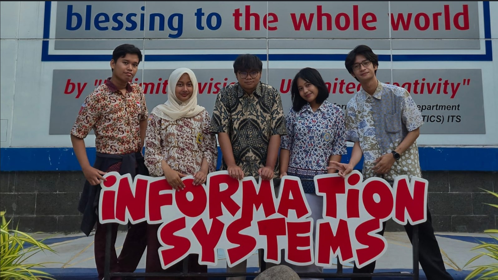
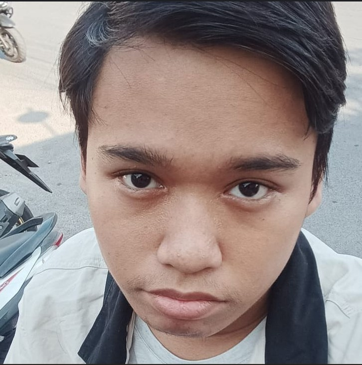
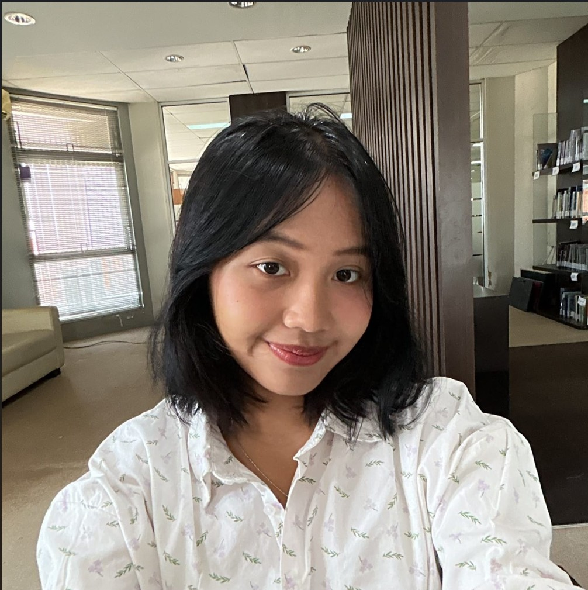
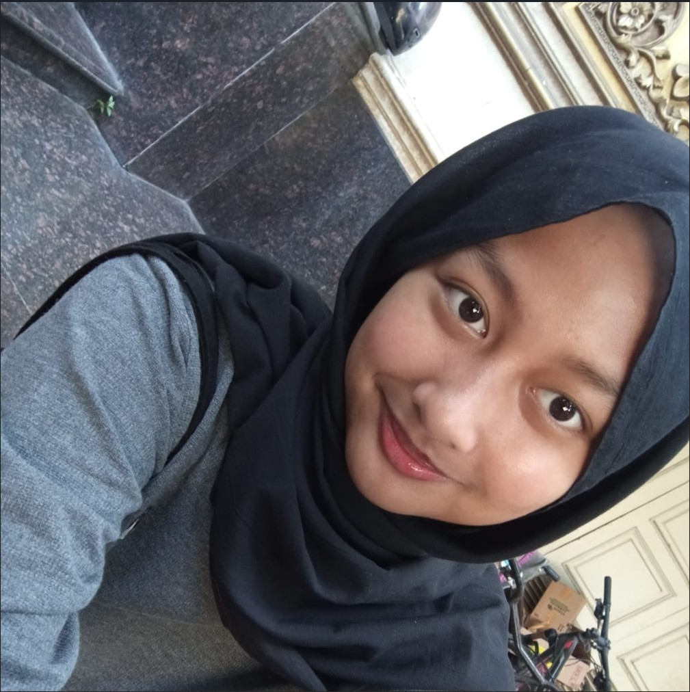
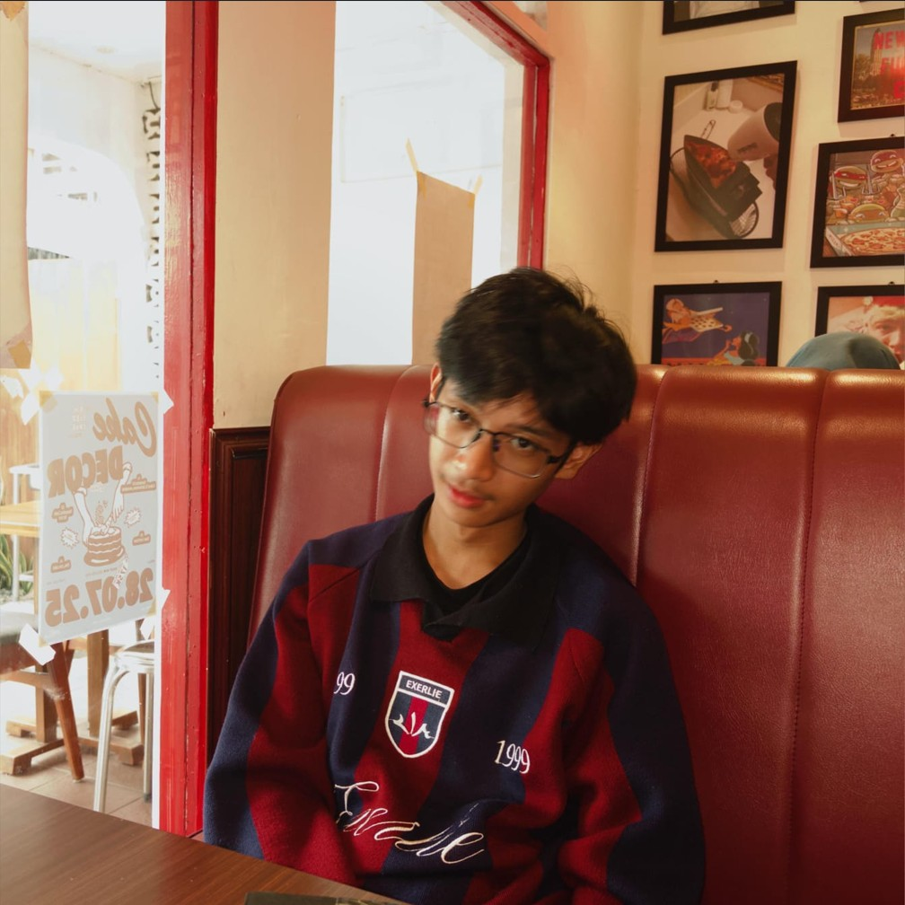
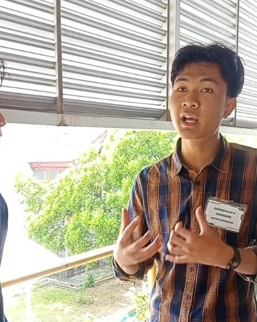
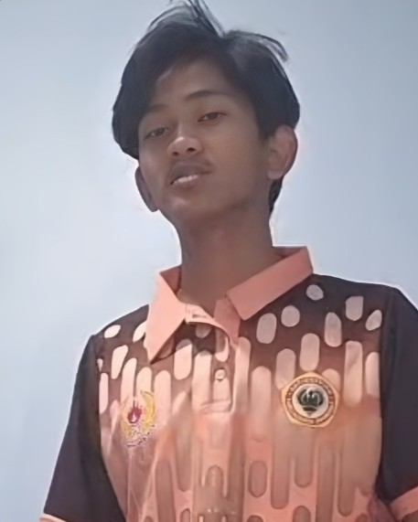
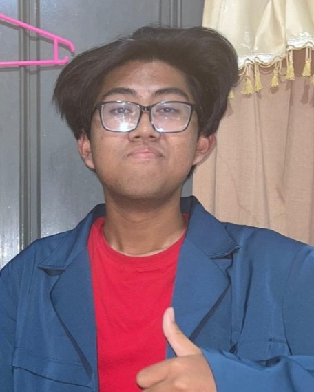
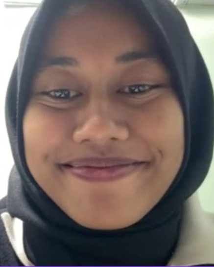
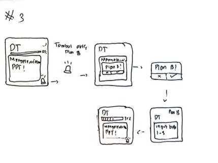

Luqman
Luqman
M. Luqman Hakim
Interviewer & Brainstorming, penyunting slide
“Membantu mahasiswa tetap konsisten belajar dengan menyadari penundaan sejak dini dan menyesuaikan target secara fleksibel, tanpa kehilangan kebebasan mengatur waktu sendiri.”
Proyek Design Thinking Kelompok 5 yang meneliti bagaimana mahasiswa menjaga ritme belajar di tengah distraksi notifikasi, situasi lingkungan yang berubah, dan kecenderungan menunda. Dari wawancara dengan 6 narasumber dari berbagai kampus, kami merumuskan POV, HMW, dan 3 solusi beserta low-fidelity prototype. Dokumentasi ini disusun sebagai portofolio terbuka agar pembaca umum dapat mengikuti alur pemecahan masalah berbasis empati secara utuh.

Kolaborasi lintas peran mulai dari perancangan alur wawancara, penggalian insight narasumber, sintesis ide solusi, hingga ilustrasi low-fidelity prototype.
M. Luqman Hakim
Interviewer & Brainstorming, penyunting slide

Azka Hadiyan M.
Interviewer & Brainstorming, penyunting slide

Kezia Marsha P.
Penyusun alur wawancara & Interviewer

Shahirah Jasmine M.F.A.
Ilustrator low-fidelity prototype & Interviewer

Said Pasha Hafiz A.F.
Interviewer, Brainstorming & Penyusun laporan/PPT
Eksplorasi bagaimana upaya mahasiswa menjaga rencana dan ritme belajar ketika dihadapkan pada distraksi eksternal (seperti notifikasi gawai), perubahan situasi lingkungan, serta kecenderungan alami untuk menunda pekerjaan (procrastination).

Asisten Lab ITS
Terdistraksi notifikasi saat kelas sehingga tugas yang terlewat dari daftar perlahan menumpuk. Keberadaan teman yang ambisius dan target IP memotivasinya untuk bangkit belajar.

Mahasiswa PENS
Selalu menetapkan poin belajar harian, namun tempat belajar yang bising membuatnya frustrasi sehingga ia memilih mengurangi target atau berhenti sama sekali.

Mahasiswa Unair
Suka belajar mandiri dengan waktu fleksibel. Saat deadline kuis diundur, ia ikut menunda karena urgensinya hilang dan baru menyesal saat deadline kembali mendekat.
Rumusan sudut pandang awal sebelum diperdalam melalui wawancara tambahan.
Mahasiswa baru dengan berbagai kebiasaan dan cara menghadapi proses belajar.
Ketidakkonsistenan belajar tidak selalu dimulai dari kemalasan atau distraksi, tetapi dari kelalaian dan penundaan kecil yang sering tidak disadari. Di sisi lain, mahasiswa tetap berusaha melanjutkan belajar dengan menyesuaikan target ketika kondisi tidak mendukung.
Membantu mahasiswa menyadari kelalaian dan dampak penundaan sejak dini, sekaligus memahami bahwa tetap belajar dengan menyesuaikan kapasitas juga merupakan bentuk konsistensi.
Klik kartu foto mana pun untuk memperbesar di dalam Lightbox.
Universitas Lambung Mangkurat
Cenderung baru belajar saat ujian sudah dekat dan mudah terdistraksi lingkungan sekitar sehingga belajarnya kurang efektif serta tidak konsisten.
Universitas Airlangga
Distraksi dari luar sering mengganggu jadwal belajarnya, sehingga ia kesulitan menjaga fokus dan terpaksa menunda waktu belajar.

Asisten Lab Teknik Industri
Butuh pembelajaran yang jelas dan terdengar bagi seluruh mahasiswa di kelas; konsistensi dan motivasi belajar mandiri kerap terganggu faktor eksternal.
Ketiga POV ini dipilih karena berkesinambungan dengan POV awal.
How might we membuat mahasiswa menjaga ritme belajar agar tetap konsisten, karena banyaknya distraksi di luar akademik?
How might we menjaga fokus di tengah berbagai situasi yang tidak menentu agar target belajar tercapai dengan efisien?
How might we menumbuhkan kebiasaan belajar mahasiswa tanpa mengganggu cara belajar yang menurut mereka nyaman, agar solusi dapat dijalankan tanpa paksaan dan konsisten?
Berangkat dari 3 pertanyaan HMW utama (masing-masing menghasilkan 10 ide untuk kategori Awam, Pengguna, dan Expert), kami mengumpulkan total 30 ide solusi yang kemudian dikelompokkan ke dalam 5 klaster tematik: Kebiasaan & Konsistensi, Manajemen Waktu & Penyelesaian Tugas, Motivasi & Lingkungan, Efektivitas & Strategi Belajar, serta Pengelolaan Rasa Menunda. Pengelompokan ini membantu tim menyaring ide yang paling berdampak dan realistis diterapkan tanpa membebani mahasiswa.
Pilih tab di bawah untuk meninjau masalah utama, konsep, langkah cara kerja, alasan pemilihan, serta sketsa low-fidelity prototype.
Mahasiswa sering menunda belajar karena merasa waktu ujian atau tenggat tugas masih lama, dan baru menyesal ketika tenggat waktu sudah sangat dekat.
Saat pengguna menekan tombol "Tunda Belajar", sistem tidak langsung menutup alarm (snooze), melainkan memunculkan layar pop-up interaktif yang menunda proses penundaan itu sendiri.
Menyadarkan sempitnya waktu secara visual tanpa menghakimi, sekaligus tetap mempertahankan kebebasan pengguna dalam mengambil keputusan.

Alur layar: Alarm 13.30 → Tombol Tunda → Pop-up "Why?" → Grafik Tugas Tumpuk ("Later" / "Start" + Do Not Disturb).
Daftar tugas (to-do list) yang panjang sering kali mengintimidasi mahasiswa. Ketika satu jadwal terganggu interupsi mendadak, tugas menumpuk ke hari berikutnya dan menurunkan motivasi.
Mengubah daftar tugas konvensional yang kaku menjadi visualisasi blok-blok waktu pendek di kalender harian (1 blok = 30 menit pengerjaan).
Memindahkan micro-task secara psikologis jauh lebih ringan secara mental daripada melihat daftar tugas besar yang gagal dikerjakan.

Alur layar: Tampilan Kalender Senin–Minggu + Bank Tugas → Interaksi geser blok tugas 30 menit ke slot waktu kosong.
Mahasiswa sering kehilangan fokus dan berhenti belajar sepenuhnya ketika situasi mendadak tidak mendukung (seperti tempat yang bising atau kelelahan sepulang kuliah).
Mode adaptif di mana pengguna menetapkan Target Utama dan Target Minimum agar kemajuan harian tetap terselamatkan dan tidak tercatat sebagai kegagalan.
Mengubah ekspektasi secara sadar saat kondisi tidak ideal jauh lebih baik untuk menjaga ritme kebiasaan daripada tidak mengerjakan apa-apa.

Alur layar: Target Utama (Menyelesaikan PPT) → Tombol Aktifkan Plan B → Konfirmasi Plan B → Target Minimum (Input Bab 1–3, progres 35% tercatat).
Menguji apakah fitur mudah digunakan dan efektif membantu mengatur jadwal, mengurangi penundaan, dan menjaga konsistensi belajar. Dari pengujian ini, tim dapat mengidentifikasi fitur yang paling bermanfaat sekaligus bagian alur yang perlu disempurnakan.